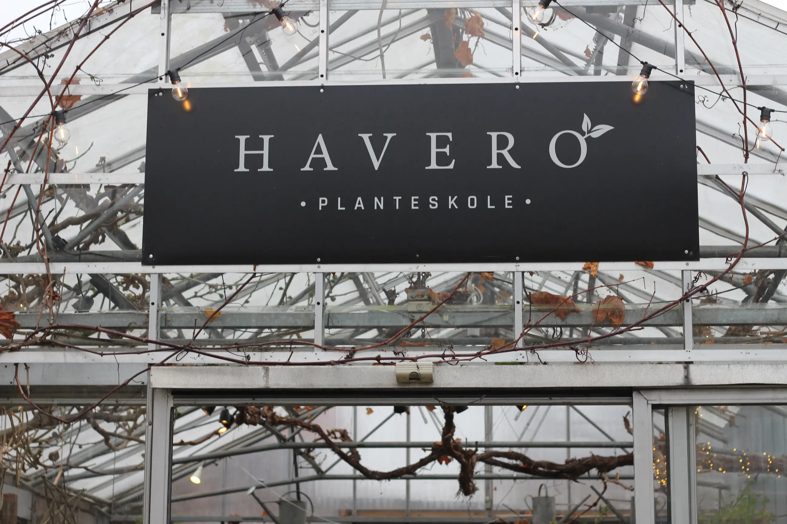

HAVERO PLANTESKOLE
“Haveros identitet ligger i navnet. Når man går ind af døren på Havero Planteskole, træder man ind i en grøn oase hvor planter, krukker, urter og pynt udfolder sig på alle kvadratmeter. Her kan man gå på opdagelse i vores staudebede, se slyngplanterne klatre langs loftet i drivhuset og få fingrene i alt der kan plantes i køkkenhaven. Vi står altid til rådighed med vejledning, og en kop kaffe i vores hyggelige pergola, hvor man kan sidde og nyde udsigten over de fine blomster. Har I et større projekt til haven, står vores dygtige havekonsulenter og -designere til rådighed med kyndig vejledning.
Havero Planteskole ligger på Emdrupgade 32, og adressen har en rig historie da der har ligget gartneri her i over 75 år. Vi har de sidste par år været at finde ved bl.a. Tivolis Havefestivaller, “Lad Det Gro” på Tv2, og vores dygtige konsulenter kan også komme ud til Jer og skabe en drømmehave. Vores passion ligger i stauder og vi råder over et stort udvalg herboende arter der gavner biodiversiteten i haven for insekter og andre dyr, så haven både er smuk og holder sig godt i det danske klima.”
SE VORES UDVALG